소음진동기사(구) (2017-05-07 기출문제)
1과목: 소음진동개론
1. 점음원에서 발생되는 소음이 10m 떨어진 지점에서 음압레벨이 100dB일 때 이 음원에서 25m 떨어진 지점에서의 음압레벨은?
- 88dB
- 92dB
- 96dB
- 104dB
(정답률: 알수없음)

2. 총합투과율이 0.035인 벽체의 총합 투과손실은?
- 29.1dB
- 14.6dB
- 7.3dB
- 1.5dB
(정답률: 알수없음)
3. 다음 중 인체감각에 대한 주파수별 보정값으로 틀린 것은? (단, 수평진동일 경우는 수평 진동이 1~2Hz 기준)
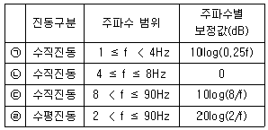
- ㉠
- ㉡
- ㉢
- ㉣
(정답률: 알수없음)
4. 음파에 관한 설명으로 옳지 않은 것은?
- 공기 등의 매질을 통하여 전파하는 소밀파(압력파)이다.
- 매질의 진동속도를 입자속도라고 하며 기체나 액체 중에서 입자속도는 음파의 진행방향과 항상 수직하므로 종파라고 한다.
- 고체는 유체와 달리 전단응력이나 굽힘응력을 받을 수 있기 때문에 종파 뿐 아니라 횡파도 전달할 수 있다.
- 둘 또는 그 이상의 음파의 구조적 간섭에 의해 시간적으로 일정하게 음압의 최고와 최저가 반복되는 패턴의 파를 정재파라고 한다.
(정답률: 50%)
5. NITTS에 관한 설명으로 옳은 것은?
- 음향외상에 따른 재해와 연관이 있다.
- NIPTS와 동일한 변위를 공유한다.
- 조용한 곳에서 적정시간이 지나면 정상이 될 수 있는 변위를 말한다.
- 청감역치가 영구적으로 변화하여 영구적인 난청을 유발하는 변위를 말한다.
(정답률: 알수없음)
6. 대표적인 소음 측정 설비인 무향실은 기준 주파수 이상 대역에서 만족해야 할 음장 조건이 있다. 이 필수적인 음장 조건은 무엇인가?
- 근음장
- 자유음장
- 확산음장
- 장향음장
(정답률: 알수없음)
7. 등감각곡선에 기초하여 정해진 보정회로를 통한 진동레벨을 산출할 때 주파수대역이 1≤f≤4Hz인 경우 수직보정곡선의 보정치의 물리량(a)은?
- 0.315×10-5×f(m/s2)
- 10-5＞(m/s2)
- 0.125×10-5×f-0.25(m/s2)
- 2×10-5×f-0.5(m/s2)
(정답률: 알수없음)
8. 낮시간대의 매시간 등가소음도가 70dB(A), 밤시간대의 매시간 등가소음도가 50dB(A)일 때, 주야간 평균소음도는? (단, 밤시간대는 22：00~07：00 이다.)
- 60dB(A)
- 63.2dB(A)
- 65dB(A)
- 68.2dB(A)
(정답률: 알수없음)
9. 공기 중의 소리 전파 속도는 340m/s라고 한다. 약 몇 ℃를 기준으로 한 값인가?
- 0℃
- 15℃
- 20℃
- 30℃
(정답률: 알수없음)
10. 다음 중 주로 항공기소음 평가지표에 해당하는 것은?
- NNI
- TNI
- NRN
- PNC
(정답률: 알수없음)
11. 진동파 및 진폭의 거리감쇠에 관한 설명으로 옳지 않은 것은? (단, 은 진동원으로부터의 거리)(오류 신고가 접수된 문제입니다. 반드시 정답과 해설을 확인하시기 바랍니다.)
- S파보다 P파의 전달속도가 빠르며, 이 P파는 구면상태로 전파할 때 지표면에서는 r, 땅속에서는 r에 반비례하여 감쇠한다.
- 표면파에는 러브(L)파와 레일리(R)파가 있다.
- R파는 원통상태로 전파되며 지표면에서는 r에 반비례하여 감쇠한다.
- 횡파는 구면상태로 전파할 때 지표면에서는 r2, 땅속에서는 √r에 반비례하여 감쇠한다.
(정답률: 알수없음)
12. 소음에 대한 일반적인 인간의 (감수성)반응으로 거리가 먼 것은?
- 70대보다 20대가 민감한 편이다.
- 남성보다 여성이 민감한 편이다.
- 환자 또는 임산부 보다는 건강한 사람이 받는 여향이 큰 편이다.
- 노동 상태보다는 휴식이나 잠잘 때 그 영향이 크게 차이 나는 편이다.
(정답률: 알수없음)
13. 음압이 35Pa이면 소리의 세기로 몇 W/m2인가?(단, 공기밀도는 1.2kg/m3, 음속은 344m/sec이다.)
- 4.5
- 3
- 1.5
- 1
(정답률: 알수없음)
14. 음압의 실효치가 2×10-2N/m2일 때 음의 세기레벨(dB)은?(단, 고유음향 음피던스는 400N·sec/m3이다.)
- 60
- 80
- 120
- 140
(정답률: 알수없음)
15. 음의 크기(loundness:S)에 관한 설명으로 옳지 않은 것은?
- 1000Hz 순음 40phon을 1sone이라 한다.
- S＝[(phone－10)]/40dB로 나타낼 수 있다.
- 1000Hz 순음의 음세기레벨 40dB의 음의 크기를 1sone이라 한다.
- 음의 크기값이 2배, 3배 증가하면 감각량의 크기도 2배, 3배 증가한다.
(정답률: 알수없음)
16. 소음계 청감보정회로 중 A특성 및 B특성에 관한 설명으로 가장 적합한 것은?
- C특성은 주관적인 감각량과 잘 대응하며, A특성은 100Hz 대역에서 상대응답이 0이다.
- C특성은 Fletcher와 Munson의 등청감곡선의 70Phons의 역특성을 이용한 것이다.
- C특성은 항공기 소음 평가시 주로 사용하고, A특성은 일반적인 소음도를 측정할 때 사용한다.
- C특성은 전주파수 대역에서 평탄한 특성을 보이고, 소음의 물리적 특성 파악시 이용된다
(정답률: 알수없음)
17. 100Hz 음과 110Hz 음이 동시에 발생하여 맥놀이 현상을 일으킨다. 이때 맥놀이수는?
- 5Hz
- 10Hz
- 1⑤Hz
- 210Hz
(정답률: 알수없음)
18. 150 Sones인 음은 몇 Phons 인가?
- 92.6
- 1⑤.4
- 112.5
- 135.8
(정답률: 알수없음)
19. 딱딱하고 평탄한 세 벽체가 수직으로 교차하는 곳에 0.38W의 소형 점음원이 있다. 이 음원으로부터 18m 떨어진 지점의 음의 세기(W/m2)는?
- 3.5×10-3
- 5.3×10-3
- 7.5×10-4
- 9.3×10-4
(정답률: 70%)
20. 지반을 전파하는 파에 관한 설명으로 옳지 않은 것은?
- 계측에 의한 지표진동은 주로 P파이다.
- P파와 S파는 역2승 법칙으로 거리감쇠한다.
- P파는 소밀파 또는 압력파라고도 한다.
- P파는 S파보다 전파속도가 빠르다.
(정답률: 알수없음)
2과목: 소음방지기술
21. 반무한 방음벽의 직접음 회절감쇠치가 20dB(A), 반사음 회절감쇠치가 15dB(A), 투과손실치가 18dB(A)일 때, 이 벽에 의한 삽입손실치는 약 몇 dB(A)인가? (단, 음원과 수음점이 지상으로부터 약간 높은 위치에 있다.)
- 11.1dB
- 12.4dB
- 14.3dB
- 17.8
(정답률: 알수없음)
22. 4가지 자재의 물성을 조사한 결과가 다음과 같았다. 동일한 두께로 동일한 환경의 단일 벽을 형성하였을 때 투과손실값이 가장 큰 자재는? (단, 투과손실값은 자재의 질량법칙만 고려하고, 면밀도로 환산시 두께는 10mm로 한다.)
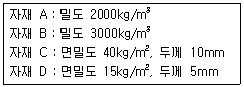
- 자재 A
- 자재 B
- 자재 C
- 자재 D
(정답률: 알수없음)
23. 무향실과 구별되는 잔향실의 특징으로 가장 적합한 것은?
- 실내의 벽면 흡음율을 0에 가깝게 설계한다.
- 공중의 한 점에서 방출되는 음은 모든 방향으로 역 2승법칙에 따라 자유롭게 확산하는 음장을 만족하는 실이다.
- 자유음장 조건을 만족하는 실이다.
- 주로 소음원의 정확한 음향특성 및 음향파워레벨조사, 소음 발생부위 탐사 등을 위해 활용된다.
(정답률: 82%)
24. 가로 20m, 세로 20m, 높이 4m인 방중앙 바닥에 PWL 90dB인 무지향성 점음원이 놓여 있다. 이 음원으로부터 10m 지점에서의 음향에너지 밀도(W·sec/m3)는? (단, 실내의 평균 흡음율은 0.1, 음속은 340m/s로 한다.)
- 10-7
- 10-8
- 10-9
- 10-10
(정답률: 알수없음)
25. 자유공간에서 지향성 음원의 지향계수가 2.0이고, 이 음원의 음향 파워레벨이 125dB일 때, 이 음원으로부터 30m 떨어진 지향점에서의 에너지 밀도는? (단, C＝340m/sec로 한다.)
- 1.325×10-6J/m3
- 1.645×10-6J/m3
- 1.743×10-6J/m3
- 1.875×10-6J/m3
(정답률: 알수없음)
26. 음이 수직 입사할 때 이 벽체의 반사율은 0.45이었다. 이 때의 투과손실(TL)은? (단, 경계면에서 음이 흡수되지 않는다고 가정한다.)
- 약 1.5dB
- 약 2.0dB
- 약 2.6dB
- 약 3.5dB
(정답률: 알수없음)
27. 다음 소음대책 중 가장 먼저 하여야 할 사항은?
- 차음재 또는 흡음재 등 선정
- 어느 주파수 대역을 얼마만큼 저감시킬 것인가를 파악
- 수음점에서의 규제기준 확인
- 수음점의 위치확인
(정답률: 알수없음)
28. 벽체면적 120m2중 유리창의 면적이 30m2이다. 벽체의 투과손실은 40dB이고 유리창의 투과손실이 25dB라고 할 때, 총합투과손실(TL)은?
- 20dB
- 24dB
- 27dB
- 31dB
(정답률: 알수없음)
29. 소음제어 등을 위한 자재류 중 제진재의 특성과 가장 거리가 먼 것은?
- 큰 내부 손실이 있는 점탄성 자재를 이용한 방사음 저감
- 회전기계류의 진동전달력 저감
- 판의 진동으로 발생하는 음에너지 저감
- 공기전파음에 의해 발생하는 공진 진폭의 저감
(정답률: 알수없음)
30. 발파소음 감소를 위한 발파풍압 경감대책으로 가장 거리가 먼 것은?
- 기폭방법에서 정기폭(top hole initiation) 보다는 역기폭 방법을 사용한다.
- 지발당 장약량을 감소시킨다.
- 완전전색이 이루어지지 않도록 한다.
- 천공지름을 작게 하여 발파시킨다.
(정답률: 알수없음)
31. 단일벽의 차음특성 커브에서 질량제어영역의 기울기 특성으로 옳은 것은?
- 투과손실이 2dB/Octave 증가
- 투과손실이 3dB/Octave 증가
- 투과손실이 4dB/Octave 증가
- 투과손실이 6dB/Octave 증가
(정답률: 60%)
32. A시료의 흡음성능 측정을 위해 정재파 관내법을 사용하였다. 1000Hz 순음인 sine파의 정재파비가 1.8이었다면 이 흡음재의 흡음율은?
- 0.816
- 0.894
- 0.918
- 0.998
(정답률: 알수없음)
33. 분홍색 잡음(Pink Noise)의 특징으로 가장 거리가 먼 것은? (단, White Noise 와 비교시)
- 옥타브 당 일정한 에너지를 갖는다.
- 랜덤 노이즈(Random Noise)의 일종이다.
- 단위 주파수 대역(1 Hz)의 음에너지 강도가 주파수에 반비례한다.
- 구조물의 진동 실험에 흔히 사용된다
(정답률: 알수없음)
34. 벽체의 한쪽 면은 실내, 다른 한쪽 면은 실외에 접한 경우 벽체의 투과손실(TL)과 벽체를 중심으로 한 현장에서 실내·외간 음압레벨차(NR, 차음도)와의 실용관계식으로 가장 적합한 것은?
- TL＝NR－3dB
- TL＝NR－6dB
- TL＝NR－9dB
- TL＝NR－12dB
(정답률: 알수없음)
35. 공간이 큰 작업실의 바닥면 한가운데에 설치되어 있는 소형기계의 음향 파워레벨이 90dB이고, 이 기계로부터 4m 떨어진 점의 음압레벨이 74.7dB라면 실내의 실정수는 얼마인가?
- 약 100m2
- 약 200m2
- 약 300m2
- 약 400m2
(정답률: 알수없음)
36. 한 근로자가 서로 다른 3장소에서 작업하고 있다. 88dB(A) 장소에서 2시간, 92dB(A) 장소에서 3시간 작업을 하였으며, 3시간 동안은 소음에 폭로되지 않은 장소에서 작업했다면 소음폭로평가(NER)는? (단, 88dB(A)에서는 6시간, 92dB(A)에서는 6시간의 폭로시간이 허용된다.)
- 1/3
- 2/3
- 3/5
- 5/6
(정답률: 알수없음)
37. 차음과 차음재료의 선정 및 사용상 유의점에 대한 설명으로 가장 거리가 먼 것은?
- 차음은 음의 에너지를 반사시켜 차음벽 밖으로 음파가 새어 나가지 않게 하는 것이다.
- 차음에서 영향이 큰 것은 틈이므로 틈이나 찢어진 곳을 보수하고 이음매는 칠해서 메꾸도록 한다.
- 큰 차음효과(TL＞40dB)를 원하는 경우에는 내부에 보통 다공질 재료를 끼운 이중벽을 시공한다.
- 차음재를 흡음재(다공질 재료)와 붙여서 사용할 경우 차음재는 음원과 가까운 안쪽에, 흡음재를 바깥쪽에 붙인다.
(정답률: 70%)
38. 대형 작업장의 공조 덕트가 민가를 향해 있어 취출구 소음이 문제되고 있다. 이에 대한 대책으로 옳지 않은 것은?
- 취출구 끝단에 소음기를 장착한다.
- 취출구 끝단에 철망 등을 설치하여 음의 진행을 세분 혼합하도록 한다.
- 취출구의 면적을 작게 한다.
- 취출구 소음의 지향성을 바꾼다.
(정답률: 알수없음)
39. 단일벽의 일치효과에 대한 설명으로 가장 거리가 먼 것은?
- 일치효과에 의해 차음성능이 현저히 감소한다.
- 일치주파수는 벽의 두께에 비례한다.
- 일치주파수는 입사각에 따라 변화된다.
- 일치효과의 한계주파수는 벽밀도의 제곱근에 비례한다.
(정답률: 70%)
40. 소음방지 대책을 소음원 대책과 전파경로 대책으로 구분할 때, 다음 중 소음원 대책으로 가장 거리가 먼 것은?
- 장비를 구성하는 구조 부재의 감쇠력을 증가시킨다.
- 공장 벽체의 차음성을 강화한다.
- 고소음 장비의 종시 운전을 피한다.
- 주거지역 소음문제 발생 시 야간 작업을 줄인다.
(정답률: 알수없음)
3과목: 소음진동 공정시험 기준
41. 총 50공의 발파공에 대해 각 공당 0.1초 간격으로 1회 지발발파 하였다. 보정발파횟수 (N)에 따른 소음도 보정량은?
- 0dB
- ＋3dB
- ＋7d
- ＋10dB
(정답률: 40%)
42. 항공기소음 관리기준 측정방법으로 옳은 것은?
- 상시측정용 측정점은 바닥면에서 5.0~10.0m 높이로 한다.
- 측정지점 반경 3.5m 이내는 가급적 평활하고 시멘트 등으로 포장되어 있어야 한다.
- 항공기소음은 넓은 범위에 영향을 미치기 때문에 측정지점은 인적 없는 한적한 수풀, 수림, 관목 등이 우거진 장소를 선정한다.
- 측정위치를 정점으로 한 원추형 상부공간이란 지면 또는 바닥면의 법선에 반각 45°선분이 지나는 공간을 말한다.
(정답률: 알수없음)
43. 규제기준 중 생활소음 측정시 측정자료의 분석 및 평가 방법으로 가장 적합한 것은?
- 디지털 소음자동분석계를 사용할 경우에는 샘플주기를 1초이내에서 결정하고 1분이상 측정하여 자동 연산·기록한 등가소음도를 그 지점의 측정소음도로 한다.
- 측정소음도가 배경소음보다 3.0~9.9dB 차이로 크면 배경소음의 영향이 있기 때문에 측정소음도에 보정치를 보정한 후 대상소음도를 구한다.
- 측정소음도의 측정은 대상소음원을 최대한의 출력으로 가동시켜 사용한 상태에서 측정하여야 한다.
- 피해가 예상되는 적절한 측정시각에 1지점 이상의 측정지점수를 선정·측정하여 그중 가장 높은 소음도를 측정소음도로 한다.
(정답률: 알수없음)
44. 진동측정과 관련된 장치 중 다음 설명에 해당하는 장치는?
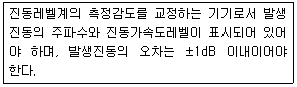
- calibrator
- output
- data recorder
- weighting networks
(정답률: 알수없음)
45. 다음은 철도진동관리기준 측정방법이다. ㉠, ㉡에 알맞은 것은?
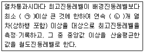
- ㉠ 10dB, ㉡ 5
- ㉠ 10dB, ㉡ 10
- ㉠ 5dB, ㉡ 5
- ㉠ 5dB, ㉡ 10
(정답률: 알수없음)
46. 공장의 부지경계선 4개 지점에서 측정한 진동레벨이 각각 68, 70, 74, 66dB(V)이었다. 이 공장의 측정진동레벨(dB(V))은?
- 70
- 74
- 76
- 77
(정답률: 알수없음)
47. 다음은 규제기준 중 생활소음 측정방법 중 대상소음이 공사장 소음인 경우 측정자료 분석방법이다. ㉠, ㉡에 알맞은 것은?
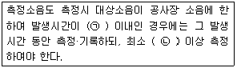
- ㉠ 5분, ㉡ 1분
- ㉠ 5분, ㉡ 2분
- ㉠ 10분, ㉡ 5분
- ㉠ 10분, ㉡ 10분
(정답률: 알수없음)
48. 철도소음관리기준 측정방법에서 측정자료 분석 시 샘플주기는 몇 초 내외로 결정하고, 몇 시간 동안 연속 측정하여야 하는가?
- 1초 내외, 1시간
- 1초 내외, 2시간
- 2초 내외, 1시간
- 2초 내외, 2시간
(정답률: 알수없음)
49. 다음 중 배경소음에 해당하는 것은?
- 정상조업중인 공장의 야간 소음도
- 소음발생원을 전부가동시킨 상태에서 측정한 소음도
- 공장의 가동을 중지한 상태에서 측정한 소음도
- 대상공장의 주·야간 소음도의 차
(정답률: 알수없음)
50. 배출허용기준 측정 시 진동픽업의 설치장소로 옳지 않은 것은?
- 온도, 자기, 전기 등의 외부영향을 받지 않는 곳
- 완충물이 충분히 확보될 수 있는 곳
- 경사 또는 요철이 없는 곳
- 충분히 다져서 단단히 굳은 곳
(정답률: 80%)
51. 환경기준 중 소음측정을 위한 측정점 선정기준 중 도로변 지역범위 기준으로 옳은 것은?
- 도로단으로부터 차선수×5m로 하고, 고속도로 또는 자동차 전용도로의 경우에는 도로단으로부터 100m 이내의 지역을 말한다.
- 도로단으로부터 차선수×5m로 하고, 고속도로 또는 자동차 전용도로의 경우에는 도로단으로부터 150m 이내의 지역을 말한다.
- 도로단으로부터 차선수×10m로 하고, 고속도로 또는 자동차 전용도로의 경우에는 도로단으로부터 100m 이내의 지역을 말한다.
- 도로단으로부터 차선수×10m로 하고, 고속도로 또는 자동차 전용도로의 경우에는 도로단으로부터 150m 이내의 지역을 말한다.
(정답률: 알수없음)
52. 측정진동레벨과 배경진동레벨의 차가 9dB(V)일 때 보정치는? (단, 단위는 dB(V))
- 0
- －0.6
- －1.9
- －3.4
(정답률: 알수없음)
53. 규제기간 중 발파진동측정에 관한 사항으로 옳지 않은 것은?
- 측정진동레벨은 발파진동이 지속되는 기간동안에, 배경진동레벨은 대상진동(발파진동)이 없을 때 측정한다.
- 진동레벨계만으로 측정하는 경우에는 최고진동레벨이 고정(Hold)되지 않는 것으로 한다
- 진동레벨의 계산과정에서는 소수점 첫째자리를 유효숫자로 하고, 평가진동레벨(최종값)은 소수점 첫째자리에서 반올림한다.
- 진동레벨의 레벨레인지 변환기는 측정지점의 진동레벨을 예비조사한 후 적절하게 고정시켜야 한다.
(정답률: 알수없음)
54. 철도진동관리기준 측정방법에 관한 방법으로 옳지 않은 것은?
- 옥외측정을 원칙으로 한다.
- 기상조건, 열차의 운행횟수 및 속도 등을 고려하여 당해지역의 3시간 평균 철도 통행량 이상인 시간대에 측정한다.
- 그 지역의 철도진동을 대표할 수 있는 지점이나 철도진동으로 인하여 문제를 일으킬 우려가 있는 지점을 택하여야 한다.
- 요일별로 진동 변동이 적은 평일(월요일부터 금요일 사이)에 당해지역의 철도진동을 측정하여야 한다.
(정답률: 알수없음)
55. 소음 배출허용기준의 측정 시 측점지점에 높이가 1.5m를 초과하는 방음벽 장애물이 있는 경우 측정점으로 가장 적합한 것은?
- 장애물 밖의 1.0~3.5m 떨어진 지점 중 암영대의 영향이 적은 지점
- 장애물 밖의 5~10m 떨어진 지점 중 암영대의 영향이 적은 지점
- 장애물로부터 소음원 방향으로 0.3~3.5m 떨어진 지점
- 장애물로부터 소음원 방향으로 5~10m 떨어진 지점
(정답률: 알수없음)
56. 어느 소음레벨을 측정한 결과 85(76, 95)[dB(A)]로 표시될 때 다음 중 가장 적합하게 설명된 것은?
- 평균치가 85[dB(A)], 80[%] Range의 하단이 76[dB(A)], 상단이 95[dB(A)]라는 뜻이다.
- 중앙치가 85[dB(A)], 최저치가 76[dB(A)], 최고치가 95[dB(A)]라는 뜻이다.
- 중앙치가 85[dB(A)], 90[%] Range의 하단이 76[dB(A)], 상단이 95[dB(A)]라는 뜻이다.
- 평균치가 85[dB(A)], 최저치가 76[dB(A)], 최고치가 95[dB(A)]라는 뜻이다.
(정답률: 알수없음)
57. 소음계의 지시계기 중 지침형의 유효지시범위는 얼마 이상이어야 하는가?
- 5dB
- 10dB
- 15dB
- 20dB
(정답률: 40%)
58. 측정소음도가 72dB(A)이고 배경소음도가 65.3dB(A)일 때 대상소음도는?
- 73dB(A)
- 71dB(A)
- 69dB(A)
- 67dB(A)
(정답률: 55%)
59. 생활진동 측정자료 평가표 서식의 “측정환경”란에 기재되어야 하는 내용으로 가장 거리가 먼 것은?
- 지면조건
- 전자장 등의 영향
- 반사 및 굴절진동의 영향
- 습도 및 온도의 영향
(정답률: 알수없음)
60. 진동에 관련한 용어정의에 관한 설명으로 옳지 않은 것은?
- 진동레벨은 감각보정회로(수직)를 통하여 측정한 진동가속도레벨의 지시치를 말하며, 단위는 dB(V)로 표시한다.
- 진동가속도레벨의 정의는 10log(a/ao)의 수식에 따르고, 여기서 a는 측정하고자 하는 진동의 가속도실효치(단위 m/s2)이며, ao는 기준진동의 가속도실효치로 10-5m/s2으로 한다.
- 변동진동은 시간에 따른 진동레벨의 변화폭이 크게 변하는 진동을 말한다.
- 대상진동레벨은 측정진동레벨에 배경진동의 영향을 보정한 후 얻어진 진동레벨을 말한다.
(정답률: 알수없음)
4과목: 진동방지기술
61. 코일스프링의 스프링 정수는 평균코일직경과 어떤 관계가 있는가?
- 평균코일직경에 반비례한다.
- 평균코일직경의 제곱에 반비례한다.
- 평균코일직경의 세제곱에 반비례한다.
- 평균코일직경의 네제곱에 반비례한다.
(정답률: 알수없음)
62. 그림과 같은 2자유도 진동계가 있다. 질량이 같은 두 물체를 평행 위치로부터 똑같이 반대방향으로 Xo만큼씩 변위를 준 후 놓았을 때의 진동수는? (단, 중력의 영향은 무시한다.)
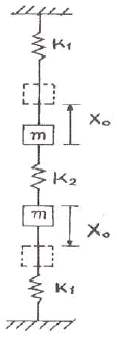
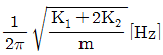
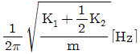
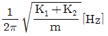
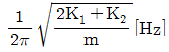
(정답률: 알수없음)
63. 그림과 같이 길이 인 실 끝에 달려 있는 질량 m인 단진자가 작은 진폭으로 운동할 때의 주기는?(단, 는 중력가속도이다.)
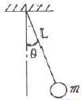
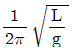
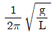
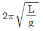
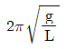
(정답률: 알수없음)
64. 감쇠비가 0.1인 감쇠진동에서 대수감쇠율은?
- 약 0.31
- 약 0.63
- 약 1.31
- 약 1.63
(정답률: 알수없음)
65.
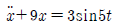
로 표시되는 비감쇠 강제 진동에서 정상상태 진동의 진폭은? (단, 진폭의 단위는 mm이고, t는 시간변수이다.)- 약 0.19mm
- 약 0.38mm
- 약 0.57mm
- 약 0.76mm
(정답률: 알수없음)
66. 1자유도계에서 외부에서 가해지는 강제진동수 f와 계의 고유진동수 fn의 비 (f/fn) 및 감쇠비 ζ, 진동전달율 T의 관계로 옳은 것은?
- f/fn ＜ 2인 범위내에서는 ζ값이 적을수록 T가 적어지므로 방진상 감쇠비가 적을수록 좋다.
- f/fn＜√2인 범위내에서는 ζ값이 커질수록 T가 적어지므로 방진상 감쇠비가 클수록 좋다.
- f/fn＞√2인 범위내에서는 ζ값이 적을수록 T가 커지므로 방진상 감쇠비가 적을수록 좋다.
- f/fn＝1에서는 ζ값과 상관없이 T가 1이다.
(정답률: 알수없음)
67. 금속스프링의 장단점으로 가장 거리가 먼 것은?
- 온도, 부식, 용해 등 환경요소에 대한 저항성이 크다.
- 10Hz 이하의 저주파수 대역의 차진에 효과적이다.
- 감쇠가 거의 없으며, 공진시 전달율이 매우 크다.
- 1개의 스프링으로 3축방향의 스프링 정수를 광범위하게 선택할 수 있다.
(정답률: 알수없음)
68. 질량 200kg 기계를 4개의 스프링으로 방진지지하고 있다. 차진율 90%를 얻어야 하며, 스프링의 정적 변위는 0.5cm여야 한다. 이 때 강제진동수는 얼마이어야 하는가? (단, 감쇠는 무시한다.)
- 약 7.0Hz
- 약 23.4Hz
- 약 37.0Hz
- 약 53.4Hz
(정답률: 알수없음)
69. 금속스프링의 단점을 보완하기 위한 방법으로 가장 거리가 먼 것은?
- 금속의 내부마찰은 대단히 작으므로 중판스프링과 같이 구조상 마찰을 가진 경우에는 감쇠기를 병용해야 한다.
- 스프링의 감쇠비가 적을 때는 스프링과 병렬로 damper를 넣는다.
- 코일스프링에서 서징의 영향을 제거하기 위해 코일스프링의 양단에 그 스프링정수의 10배 정도보다 작은 스프링정수를 가진 방진고무를 직렬로 삽입하는 것이 좋다.
- 낮은 감쇠비로 일어나는 고주파 진동의 전달은 스프링과 직렬로 고무패드를 끼워 차단한다.
(정답률: 50%)
70. 그림과 같은 보의 횡진동에서 좌단의 경계조건을 옳게 표시한 것은?
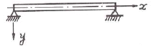
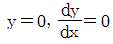
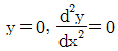
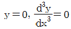
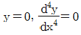
(정답률: 알수없음)
71.
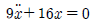
으로 표시되는 운동방정식에서의 고유진동수는?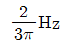
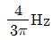
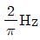
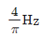
(정답률: 알수없음)
72. x1=2cos6t와 x2=2cos(6+0.2)t를 합성하면 맥놀이(beat) 현상이 일어난다. 이 때 울림진동수는?
- 0.0159Hz
- 0.0318Hz
- 3.142Hz
- 62.82Hz
(정답률: 알수없음)
73. 방진대책 중 “가진력 감쇠”는 통상적으로 어디에 해당하는가?
- 발생원 대책
- 전파경로 대책
- 수진측 대책
- 규제 대책
(정답률: 알수없음)
74. 질량 m, 길이 인 그림과 같은 막대 진자의 고유 진동수는? (단, 수직으로 매달린 가늘고 긴 막대가 평면에서 진동하며 진폭은 작다고 가정한다.)
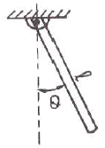
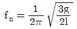
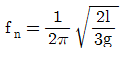
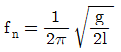
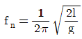
(정답률: 28%)
75. 스프링을 매개로 한 진동전달율에 관한 설명으로 옳은 것은?(단, 진동전달율
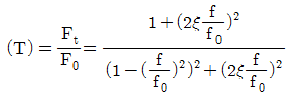
이다.)- f/f0＝0인 경우 기초에 전달되는 힘은 가진력의 1+(1/2ζ)2배가 된다.
- f/f0가 커짐에 따라 가진력은 점점 작아진다.
- 0＜f/f0＜2범위에서 ζ가 클수록 기초에 전달되는 힘은 작다.
- f/f0＝1인 경우는 기초에 전달되는 힘은 가진력과 같다.
(정답률: 알수없음)
76. 무게 1710N, 회전속도 1170rpm의 공기압축기가 있다. 방진고무의 지지점을 6개로 하고, 진동수비가 2.9라 할 때 고무의 정적수축량은? (단, 감쇠는 무시)
- 0.44cm
- 0.55cm
- 0.63cm
- 0.82cm
(정답률: 알수없음)
77. 방진대책으로 거리가 먼 것은?
- 수진측을 탄성지지 한다.
- 수진측의 강성을 변경한다.
- 가진력을 저감시킨다.
- 진동원의 위치를 멀리 하여 거리감쇠를 작게 한다.
(정답률: 알수없음)
78. 스프링정수 k가 100kg/cm인 스프링으로 100kg의 무게를 지지하였다고 하면 고유 진동수(Hz)는?
- 약 1Hz
- 약 3Hz
- 약 5Hz
- 약 7Hz
(정답률: 알수없음)
79. 점성감쇠를 갖는 강제진동의 위상각은 공진시에는 몇 도인가?
- 0°
- 90°
- 180°
- 270°
(정답률: 알수없음)
80.
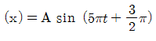
로 표시되는 조화운동의 진동수는?- 2.5Hz
- 3.25Hz
- 0.4Hz
- 0.31Hz
(정답률: 알수없음)
5과목: 소음진동 관계 법규
81. 소음진동관리법상 벌칙기준 중 3년 이하의 징역 또는 3천만원 이하의 벌금에 처하는 경우는?
- 제작차 소음허용기준과 관련하여 환경부령으로 정하는 중요사항에 대한 변경인증을 받지 아니하고 자동차를 제작한자
- 생활소음·진동의 규제기준을 초과하여 받은 조치명령을 이해하지 않아 받은 해당공사의 중지명령을 위반한 자
- 거짓의 소음도표지를 붙인 자
- 제작차 소음허용기준에 맞지 아니하게 자동차를 제작한 자
(정답률: 알수없음)
82. 소음진동관리법규상 제작자동차의 배기소음 허용기준이 틀린 것은? (단, 2006년 1월 1일 이후에 제작되는 자동차를 기준으로 하며, 단위는 dB(A))
- 총배기량 80cc 이하인 이륜자동차：102 이하
- 원동기출력 195마력을 초과하는 대형 화물자동차：1⑤ 이하
- 소형 승용자동차：103 이하
- 원동기출력 97.5마력 이하인 대형 화물자동차：103 이하
(정답률: 알수없음)
83. 다음은 소음진동관리법규상 배출시설의 변경신고 등에 관한 사항이다. ( )안에 알맞은 것은?
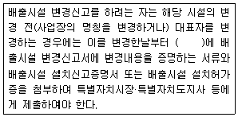
- 30일 이내
- 60일 이내
- 90일 이내
- 120일 이내
(정답률: 알수없음)
84. 소음진동관리법상 전국적인 소음·진동의 실태를 파악하기 위하여 측정망을 설치하고 상시 측정하여야 하는 자는?
- 국무총리
- 유역환경청장
- 환경부장관
- 지방환경청장
(정답률: 알수없음)
85. 소음진동관리법규상 시·도지사가 환경부장관에게 제출하는 매년 주요 소음·진동 관리시책의 추진상황에 관한 연차보고서에 포함될 내용으로 가장 거리가 먼 것은?
- 소음·진동 전달경로 및 피해 산정
- 소음·진동발생원 및 소음·진동현황
- 소음·진동 저감대책 추진실적 및 추진계획
- 소요 재원의 확보계획
(정답률: 알수없음)
86. 소음진동관리법규상 방지시설을 설치하여야 하는 사업장이 방지시설을 설치하지 아니하고 배출시설을 가동한 경우의 2차 행정처분 기준은?
- 조업정지
- 사용금지명령
- 폐쇄명령
- 허가취소
(정답률: 알수없음)
87. 소음진동관리법규상 운행차에 경음기를 추가로 붙인 경우 등은 환경부령으로 정하는 바에 따라 자동차 소유자에게 개선을 명할 수 있다. 다음 중 개선에 필요한 기간기준은?
- 개선명령일부터 3일로 한다.
- 개선명령일부터 5일로 한다.
- 개선명령일부터 7일로 한다.
- 개선명령일부터 10일로 한다.
(정답률: 알수없음)
88. 소음진동관리법규상 환경기술인을 두어야 할 사업장 및 그 자격기준에서 소음·진동기사 2급(산업기사) 이상의 기술자격 소지자를 두어야 하는 대상 사업장은 총동력 합계를 기준으로 할 때 몇 kW 이상인가?
- 1000kW 이상
- 2550kW 이상
- 3250kW 이상
- 3750kW 이상
(정답률: 알수없음)
89. 소음진동관리법규상 관리지역 중 산업개발진흥지구의 밤시간대(22:00~06:00) 공장진동 배출허용기준(dB(V))으로 옳은 것은?
- 55 이하
- 60 이하
- 65 이하
- 70 이하
(정답률: 알수없음)
90. 소음진동관리법령상 인증을 생략할 수 있는 자동차에 해당하는 것은?
- 제철소·조선소 등 한정된 장소에서 운행되는 자동차로서 환경부장관이 정하여 고시하는 자동차
- 군용·소방용 및 경호 업무용 등 국가의 특수한 공무용으로 사용하기 위한 자동차
- 여행자 등이 다시 반출할 것을 조건으로 일시 반입하는 자동차
- 자동차제작자·연구기관 등이 자동차의 개발이나 전시 등을 목적으로 사용하는 자동차
(정답률: 알수없음)
91. 소음진동관리법규상 확인검사대행자와 관련한 행정처분기준 중 고의 또는 중대한 과실로 확인검사 대행업무를 부실하게 한 경우 1차 행정처분기준으로 옳은 것은?
- 경고
- 인증취소
- 개선명령 및 사용정지 2일
- 업무정지 6일
(정답률: 알수없음)
92. 소음진동관리법규상 운행자동차 중 중대형 승용자동차의 배기소음(dB(A)) 허용기준은? (단, 2006년 1월 1일 이후에 제작되는 자동차기준)
- 100 이하
- 1⑤ 이하
- 110 이하
- 112 이하
(정답률: 알수없음)
93. 소음진동관리법규상 전기를 주동력으로 사용하는 자동차에 대한 종류는 무엇에 의해 구분하는가?
- 마력수
- 차량총중량
- 소모전기량(V)
- 엔진배기량
(정답률: 알수없음)
94. 소음진동관리법상 환경기술인을 임명하지 아니한 자에 대한 과태료 부과기준으로 옳은 것은?
- 200만원 이하의 과태료
- 300만원 이하의 과태료
- 6개월 이하의 징역 또는 500만원 이하의 과태료
- 1년 이하의 징역 또는 500만원 이하의 과태료
(정답률: 알수없음)
95. 환경정책기본법상 국가 및 지방자치단체가 환경기준이 적절히 유지되도록 환경에 관한 법령의 재정과 행정계획의 수립 및 사업을 집행할 경우에 고려하여야 할 사항과 가장 거리가 먼 것은?
- 재원 조달방법의 홍보
- 새로운 과학기술의 사용으로 인한 환경훼손의 예방
- 환경오염지역의 원상회복
- 환경악화의 예방 및 그 요인의 제거
(정답률: 알수없음)
96. 다음은 소음진동관리법규상 운행차 정기검사의 방법·기준 및 대상 항목 중 경적소음측정에 관한 사항이다. ( )안에 가장 적합한 것은?
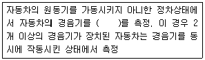
- 5초 동안 작동시켜 최대소음도
- 10초 동안 작동시켜 최대소음도
- 5초 동안 작동시켜 평균소음도
- 10초 동안 작동시켜 평균소음도
(정답률: 알수없음)
97. 환경정책기본법상 용어의 정의로 옳지 않은 것은?
- “환경개선”이라 함은 환경오염 및 환경훼손으로부터 환경을 보호하고 오염되거나 훼손된 환경을 개선함과 동시에 쾌적한 환경의 상태를 유지·조성하기 위한 행위를 말한다.
- “자연환경”이라 함은 지하·지표(해양을 포함한다) 및 지상의 모든 생물과 이들을 둘러싸고 있는 비생물적인 것을 포함한 자연의 상태(생태계 및 자연경관을 포함한다)를 말한다.
- “환경훼손”이라 함은 야생동식물의 남획 및 그 서식지의 파괴, 생태계질서의 교란, 자연경관의 훼손, 표토의 유실 등으로 자연환경의 본래적 기능에 중대한 손상을 주는 상태를 말한다.
- “생활환경”이라 함은 대기, 물, 토양, 폐기물, 소음·진동, 악취, 일조, 인공조면 등 사람의 일상생활과 관계되는 환경을 말한다.
(정답률: 알수없음)
98. 소음진동관리법에서 교통기관으로 정의되지 않는 것은?
- 선박
- 도로
- 전차
- 철도
(정답률: 알수없음)
99. 소음진동관리법령상 공항 인근 지역이 아닌 그 밖의 지역의 항공기소음 영향도(WECPNL) 기준으로 옳은 것은?
- 95
- 90
- 85
- 75
(정답률: 알수없음)
100. 소음진동관리법규상 시장·군수·구청장 등은 그 관할구역에서 환경기술인 과정 등의 각 교육과정별 대상자를 선발하여 그 명단을 해당 교육과정 개시 며칠전까지 교육기관의 장에게 통보하여야 하는가?
- 7일 전까지
- 15일 전까지
- 30일 전까지
- 60일 전까지
(정답률: 알수없음)